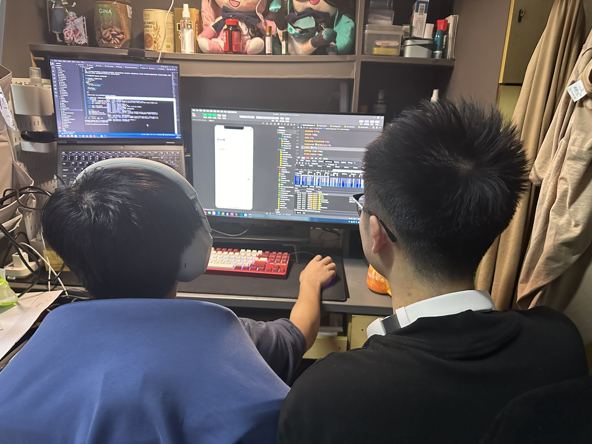
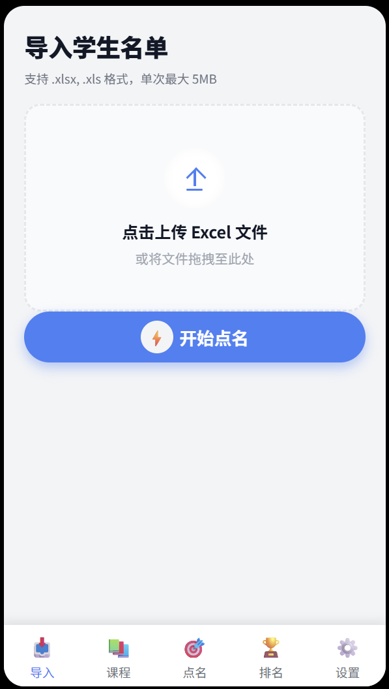
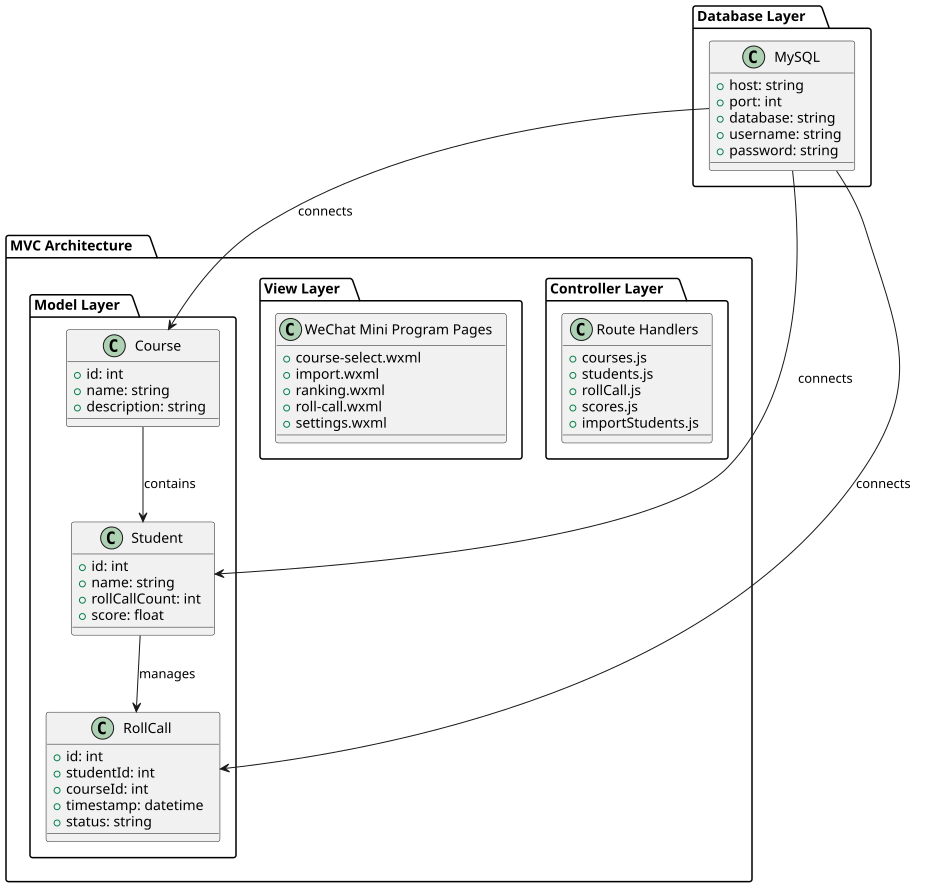
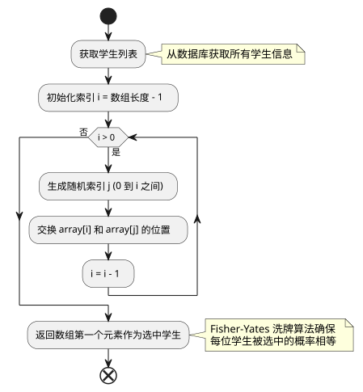
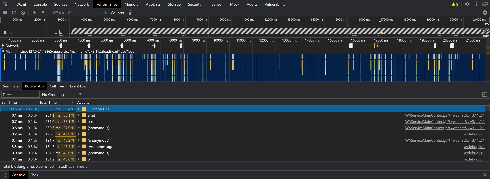
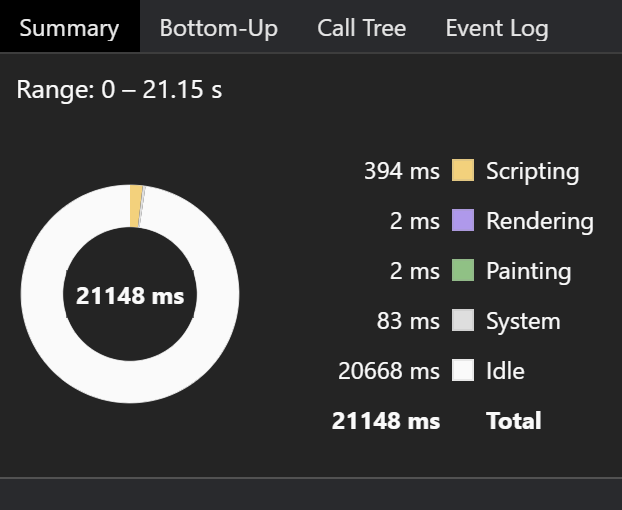
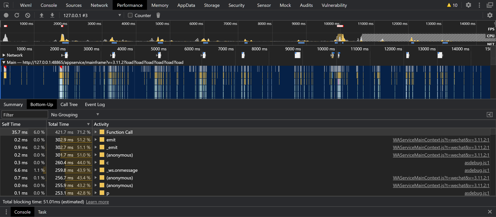
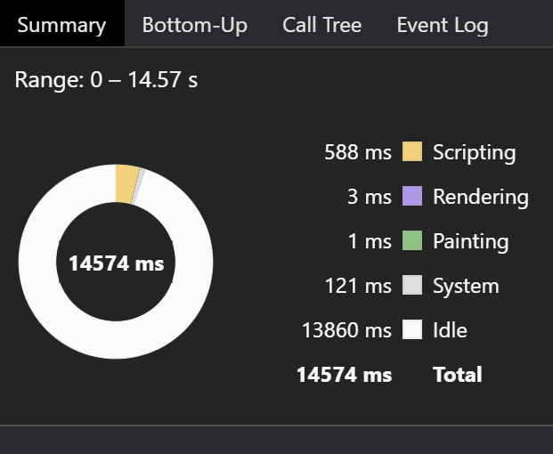

2025软工K班结队编程任务
2025软工K班结对编程任务
https://github.com/yequdesu/SE-cowork
https://www.bilibili.com/video/BV1A5UwBaEoc?vd_source=0b3fb397d505ec7378499f3e04951949
一、结对探索
1.1 队伍基本信息
结对编号：114514 ；队伍名称：杨炜组；
| 学号 | 姓名 | 作业博客链接 | 具体分工 |
|---|---|---|---|
| 052301319 | 杨恪 | https://yequdesu.github.io/2025/11/23/2025%E8%BD%AF%E5%B7%A5K%E7%8F%AD%E7%BB%93%E5%AF%B9%E7%BC%96%E7%A8%8B%E4%BB%BB%E5%8A%A1/ | 算法设计，编程实现，视频录制 |
| 152301212 | 王炜 | https://blog.csdn.net/ww_sg_hh/article/details/155168367?spm=1001.2014.3001.5501 | 原型设计，UI设计，bug修复，博客编写 |
1.2 结对的过程
在本次结对编程任务中，我们两人通过在线下宿舍内协作开发。首先，我们共同分析需求，确定了点名系统的核心功能模块。然后，王炜负责原型设计，UI设计，杨恪负责算法设计，编程实现。我们每天晚上都会讨论进度和问题，使用git进行代码版本控制，确保代码质量。
1.3 非摆拍的两人在讨论设计或结对编程过程的照片

二、原型设计
2.1 原型工具的选择
我们选择了墨刀作为原型设计工具。墨刀是一款专业的移动端原型设计工具，支持微信小程序风格的组件库，具有良好的交互设计能力和团队协作功能。我们选择它是因为项目是微信小程序，墨刀能准确模拟小程序界面，同时支持快速迭代和反馈收集。
2.2 遇到的困难与解决方法
在原型设计过程中，我们遇到的主要困难是小程序特有的交互逻辑，如页面跳转和数据绑定。起初，我们对微信小程序的组件不够熟悉，导致原型交互不够流畅。通过查阅微信官方文档和墨刀教程，我们逐步掌握了小程序的设计规范。同时，我们进行了多次用户测试，发现了导航不够直观的问题，通过调整页面布局解决了这个问题。这个过程让我们深刻认识到原型设计的重要性，以及前期调研对项目成功的关键作用。
2.3 原型作品链接
https://github.com/SuperBriefs/Random-Roll-Call-System-Prototype
2.4 原型界面图片展示
学生名单导入页面
上传学生的Excel名单后导入后台，更新学生数据

课程选择页面
对正在进行的课程选择，方便管理不同班级，不同课程的学生

点名页面
有顺序和随机两种点名方式，当进行答题时可以进行加分处理，可以选择是否开启随机事件，如果开启随机事件，在点名时会随机出现如分数加倍的随机事件，还可以选择学生出席情况

排名页面
对点名界面的加分情况进行统计，显示在排行榜上，实现了柱状图可视化

学生管理页面
可以添加和删除学生信息，还可以修改学生学号

2.6 页面结构详情
微信小程序页面结构
项目包含6个主要页面：
导入页面 (
pages/import/)- 功能：上传Excel文件批量导入学生信息
- 组件：文件选择器、上传按钮、导入结果显示
课程选择页面 (
pages/course-select/)- 功能：选择当前管理的课程
- 组件：课程列表、课程切换
点名页面 (
pages/roll-call/)- 功能：随机/顺序点名，积分计算
- 组件：点名按钮、学生信息显示、积分输入表单、随机事件显示
- 特性：100ms延迟批量更新机制
随机事件管理页面 (
pages/events/)- 功能：开启/关闭随机事件功能
- 组件：开关控件、事件说明
排名页面 (
pages/ranking/)- 功能：显示积分排行榜
- 组件：柱状图、排名列表
设置页面 (
pages/settings/)- 功能：学生信息管理
- 组件：学生列表、添加/编辑/删除按钮、批量操作
2.5 功能需求
核心功能需求
学生信息管理
- Excel文件批量导入学生信息
- 单个学生信息添加、修改、删除
- 学生批量删除操作
- 按课程管理学生数据
点名功能
- 随机点名：基于积分的加权随机选择算法
- 顺序点名：按学号顺序循环点名
- 积分实时计算和更新
- 点名记录保存
积分系统
- 到达积分（1分）
- 复述问题积分（正确+0.5分，错误-1分）
- 回答问题积分（0.5-3分）
- Combo连击加成
- 随机事件加成
随机事件系统
- 免扣分：复述错误时免除扣分
- 额外加分：额外获得1分奖励
- 幸运加倍：所有积分翻倍
- 随机事件开关管理
数据导出
- 积分详单Excel导出
- 包含学号、姓名、专业、点名次数、总积分
排名统计
- 积分排行榜
- 柱状图可视化展示
课程管理
- 多课程支持
- 课程切换功能
三、编程实现
3.1 开发工具库（如文件读取包等）的使用
后端使用了Express.js框架、MySQL 8.0+数据库、multer文件上传中间件。前端使用了微信小程序原生API。文件读取使用了Node.js的fs模块和xlsx库进行Excel文件解析。
3.2 代码组织与内部实现设计（类图）
项目采用MVC架构：
- Model层：Student、Course、RollCall模型类
- View层：微信小程序页面
- Controller层：路由处理函数
类图：

3.2.1 数据库设计
系统使用MySQL数据库，包含4个核心表：
courses表（课程表）
| 字段名 | 类型 | 约束 | 说明 |
|---|---|---|---|
| id | INT | PRIMARY KEY AUTO_INCREMENT | 课程ID |
| name | VARCHAR(100) | NOT NULL | 课程名称 |
| description | TEXT | - | 课程描述 |
students表（学生表）
| 字段名 | 类型 | 约束 | 说明 |
|---|---|---|---|
| student_id | VARCHAR(20) | PRIMARY KEY | 学号 |
| course_id | INT | PRIMARY KEY, FOREIGN KEY | 课程ID |
| name | VARCHAR(100) | NOT NULL | 学生姓名 |
| major | VARCHAR(100) | - | 专业 |
| roll_call_count | INT | DEFAULT 0 | 点名次数 |
| total_score | DECIMAL(10,2) | DEFAULT 0.00 | 总积分 |
scores表（积分记录表）
| 字段名 | 类型 | 约束 | 说明 |
|---|---|---|---|
| id | INT | PRIMARY KEY AUTO_INCREMENT | 记录ID |
| student_id | VARCHAR(20) | NOT NULL, FOREIGN KEY | 学号 |
| course_id | INT | NOT NULL, FOREIGN KEY | 课程ID |
| score | DECIMAL(5,2) | NOT NULL | 积分值 |
| timestamp | TIMESTAMP | DEFAULT CURRENT_TIMESTAMP | 记录时间 |
roll_calls表（点名记录表）
| 字段名 | 类型 | 约束 | 说明 |
|---|---|---|---|
| id | INT | PRIMARY KEY AUTO_INCREMENT | 记录ID |
| student_id | VARCHAR(20) | NOT NULL, FOREIGN KEY | 学号 |
| course_id | INT | NOT NULL, FOREIGN KEY | 课程ID |
| roll_call_time | TIMESTAMP | DEFAULT CURRENT_TIMESTAMP | 点名时间 |
表关系说明：
- courses.id → students.course_id (1:N)
- courses.id → scores.course_id (1:N)
- courses.id → roll_calls.course_id (1:N)
- students(student_id, course_id) → scores(student_id, course_id) (1:N)
- students(student_id, course_id) → roll_calls(student_id, course_id) (1:N)
3.2.2 API接口列表
学生管理接口
GET /api/students?course_id={id}- 获取指定课程的学生列表POST /api/students?course_id={id}- 添加新学生PUT /api/students/{student_id}?course_id={id}- 修改学生信息DELETE /api/students/{student_id}?course_id={id}- 删除指定学生
点名接口
GET /api/rollCall/random?course_id={id}&randomEventEnabled={true/false}- 随机点名GET /api/rollCall/sequential?course_id={id}- 顺序点名POST /api/updateRollCall- 更新点名积分
排名统计接口
GET /api/scores?course_id={id}&limit={num}- 获取积分排名
数据导出接口
GET /api/exportScores?course_id={id}- 导出积分Excel文件
课程管理接口
GET /api/courses- 获取所有课程POST /api/courses- 创建新课程PUT /api/courses/{id}- 更新课程信息DELETE /api/courses/{id}- 删除课程
文件导入接口
POST /api/importStudents?course_id={id}- 上传Excel文件导入学生
3.3 说明算法的关键与关键实现部分流程图
随机点名算法：使用加权随机选择算法，根据学生的积分情况调整选中概率。积分越低的学生权重越大，更容易被选中。

3.4 贴出重要的/有价值的代码片段并解释
随机点名核心算法（routes/rollCall.js）：
1 | // 计算权重 |
此算法实现了加权随机选择：权重 = maxScore - total_score + 1，确保积分较低的学生有更高的选中概率，实现教育公平性。
3.5 性能分析与改进
通过Chrome DevTools分析，发现setData方法耗时最长。
优化前性能图：


优化后性能图：


核心优化逻辑
- **数据缓冲区：**添加 pendingUpdates 对象存储待更新的数据
- **延迟批量更新：**100ms 合并执行 setData
- **替换实时 setData：**将二十多次 setData 改为 scheduleUpdate
- **避免内存泄漏：**页面卸载清理定时器
3.6 单元测试
测试加权随机选择算法：
1 | test('weighted random selection should favor lower scores', () => { |
测试思路：验证权重计算逻辑，确保积分越低的学生获得更高的权重。
3.7 贴出代码commit记录

四、总结反思
4.1 本次任务的PSP表格
| PSP2.1 | Personal Software Process Stages | 预估耗时（分钟） | 实际耗时（分钟） |
|---|---|---|---|
| Planning | 计划 | 120 | 150 |
| Estimate | 估计这个任务需要多少时间 | 60 | 80 |
| Development | 开发 | 800 | 1000 |
| Analysis | 需求分析 (包括学习新技术) | 180 | 220 |
| Design Spec | 生成设计文档 | 120 | 140 |
| Design Review | 设计复审 | 60 | 70 |
| Coding Standard | 代码规范 (为目前的开发制定合适的规范) | 30 | 40 |
| Design | 具体设计 | 200 | 250 |
| Coding | 具体编码 | 600 | 750 |
| Code Review | 代码复审 | 90 | 110 |
| Test | 测试（自我测试，修改代码，提交修改） | 120 | 160 |
| Reporting | 报告 | 60 | 80 |
| Test Report | 测试报告 | 45 | 60 |
| Size Measurement | 计算工作量 | 30 | 40 |
| Postmortem & Process Improvement Plan | 事后总结, 并提出过程改进计划 | 60 | 80 |
| 合计 | 2575 | 3230 |
4.2 学习进度条（每周追加）
| 第N周 | 新增代码（行） | 累计代码（行） | 本周学习耗时(小时) | 累计学习耗时（小时） | 重要成长 |
|---|---|---|---|---|---|
| 1 | 500 | 500 | 5 | 5 | 熟悉Node.js和微信小程序开发 |
| 2 | 800 | 1300 | 12 | 17 | 掌握数据库设计和API开发 |
| 3 | 1000 | 2300 | 18 | 35 | 学习前端交互设计和用户体验优化，完成项目集成和测试 |
4.3 最初想象中的产品形态、原型设计作品、软件开发成果三者的差距如何？
最初想象的产品非常复杂，包含AI智能点名等高级功能。但受限于时间和技术水平，原型设计时不得不简化功能。实际开发中，由于微信小程序的限制和后端性能问题，进一步缩减了功能范围。主要差距在于技术实现难度和时间限制，造成了从理想到现实的落差。未来需要更充分的前期技术调研和合理的项目规划。
4.4 评价你的队友
王炜评价杨恪：
值得学习的地方是算法设计能力和编程实现能力，需要改进的是交流时的表达清晰度。
杨恪评价王炜：
值得学习的地方是原型设计和UI设计能力，需要改进的是bug修复时的耐心程度。
4.5 结对编程作业心得体会
王炜：
这次作业难度适中，通过线下结对编程学到了很多协作技巧。作为负责原型设计、UI设计、bug修复和博客编写的一方，我深刻体会到前期设计对项目成功的重要性。最大的困难是bug修复，但通过与杨恪的线下讨论，我们共同解决了问题。这次经历让我认识到团队合作在软件开发中的重要性。
杨恪：
作业很有挑战性，完成后的成就感很强。作为负责算法设计、编程实现和视频录制的一方，我在实现随机点名算法时遇到了不少困难，但通过查阅资料和与王炜的线下交流，最终成功解决。对我来说，这次线下结对经历让我认识到团队合作和明确分工对项目效率的提升作用。